ZILLOW
The Brief
Zillow, a real estate search application, wants to increase engagement by offering a function that allows users to search by their available down payment and what they are able to afford per month. This search function will take into account current interest rates along with estimated property taxes, insurance rates, and any HOA dues. This could capture a potentially large market of users who do not know what they can afford and have never met with a home loan specialist.
Goal
A seamless flow from Search by List Price to Search by Monthly Payment and back. A monthly payment estimator on home listing page that is visually enticing and educational. A cleaner, more efficient experience for iOS users while keeping in mind stakeholder needs.
Concept - General Assembly Class Project
Tools
- - - - - - - - - - - - - - - - - -
UI Comparison Before & After
A Comparison of the Original Zillow App VS. Our Re-Design
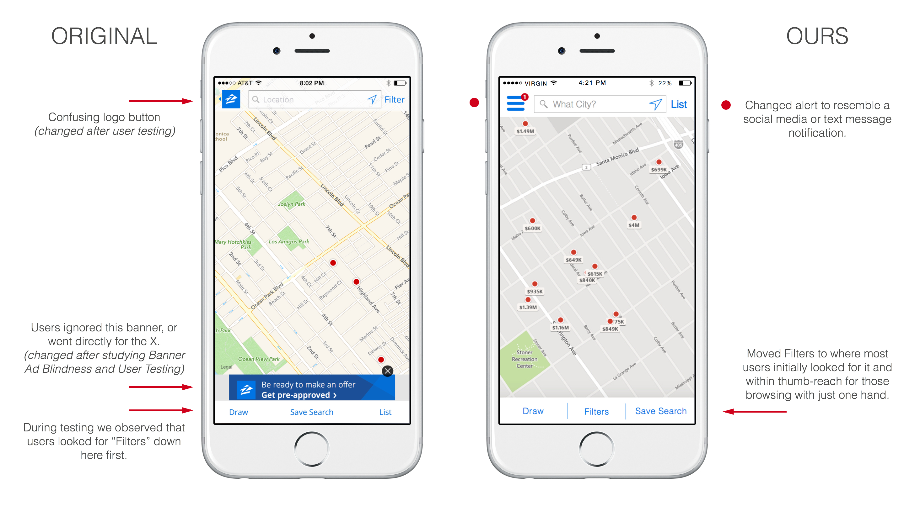
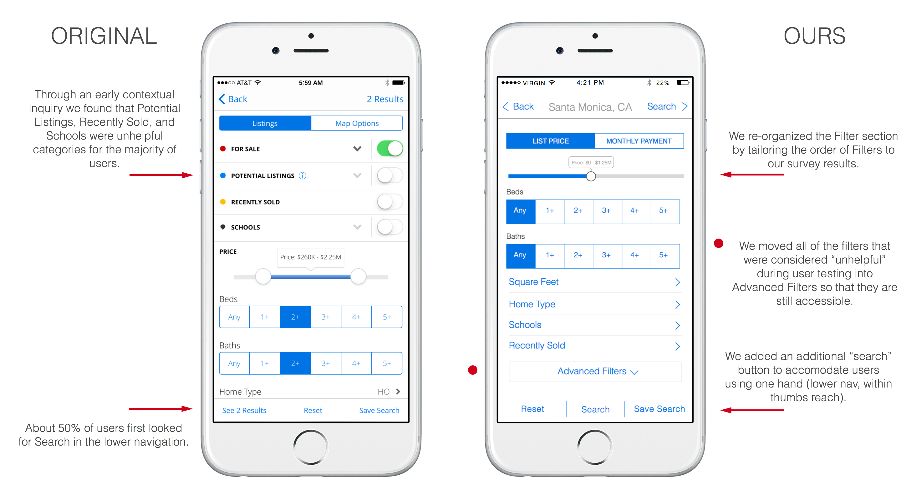
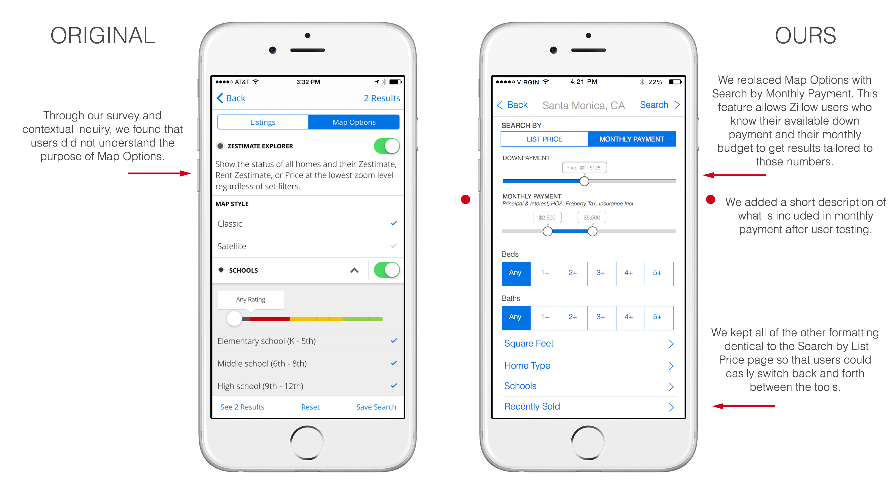
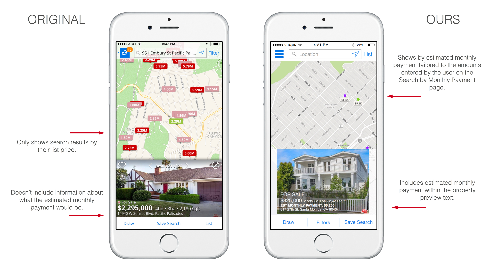
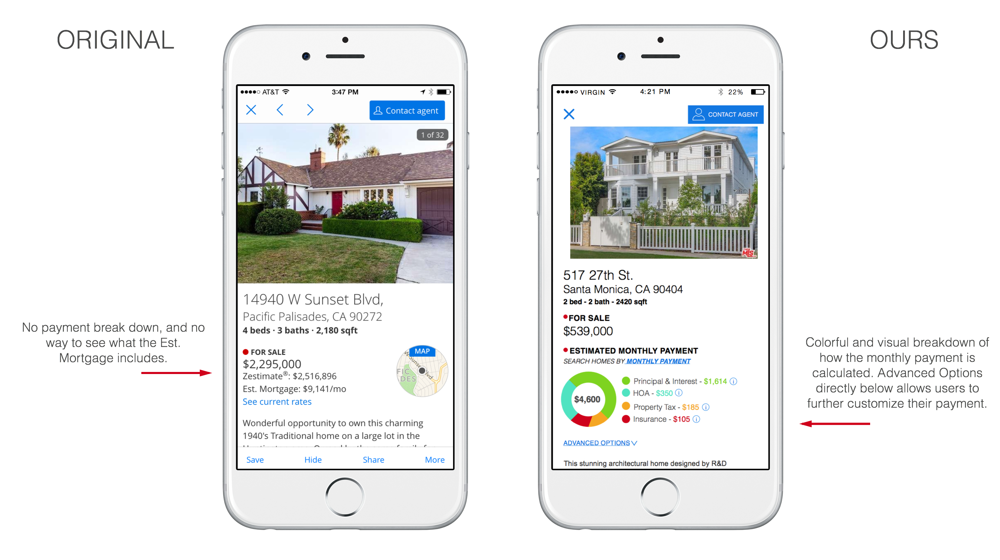
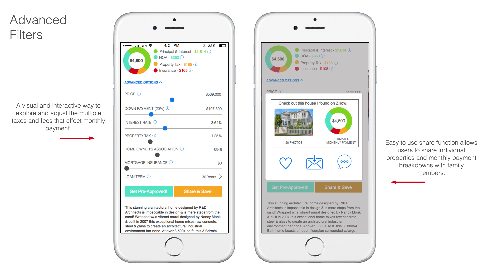
- - - - - - - - - - - - - - - - - -
The Process
How we got to our MVP
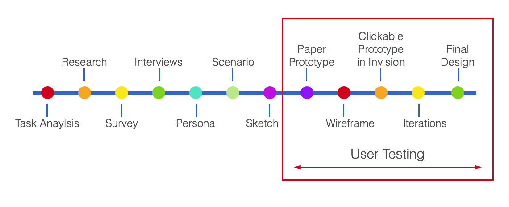
Analyzing Current IA
In order to successfully add a new feature to an existing flow, it is crucial to have a deep undestanding of the product's current infrastructure. To do this, we created two site maps - one covering Zillow's desktop experience and another covering Zillow's mobile app experience.
Desktop:
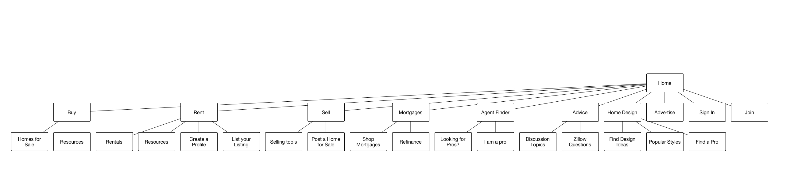
Mobile App:
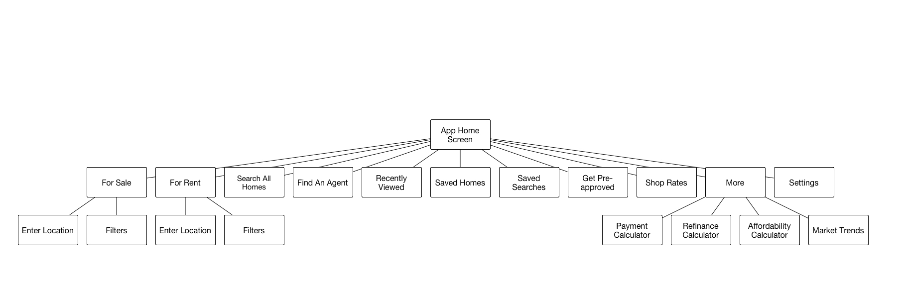
User Interview
From the user interview, we got a sense of how, when and why someone would use the feature we were designing. A couple key findings included:
Question: If there was a search function on Zillow that took into account your down payment and then allowed you to search by estimated monthly cost of owning a home, would you use it? How would it be helpful?
User Answer: “Yes. It would narrow down the homes based on the ones I could actually afford with my monthly payment instead of just looking at purchase price which i wouldn’t necessarily know if there were HOA costs or additional cost for those additional homes.”
Question: Would you use it in addition to the current min-max price search tool, or instead of?
User Answer: “In addition to. Ideally I would search by payment and then when it came up it would show me the home prices as well as the monthly payment on a map so I could see both at the same time. Then if I wanted to get more detail I could click on the payment and maybe I would adjust the home price down if I was able to get the house for less money, and that would re-calculate what my monthly payment would be.”
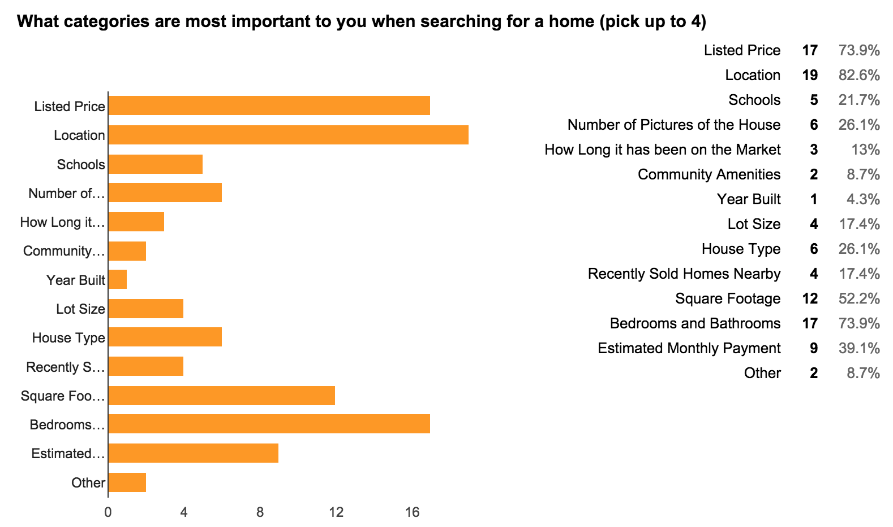
Key Demographic Findings
After our initial research, we composed and sent out a survey to obtain the information needed to create our persona, and also to get general opinions on real estate search apps.
- Average income of $125k
- 82.6% use a mobile app to search for homes
- 69.9% has used an online mortgage calculator to estimate their monthly payment
- 66.9% used more than one real estate app to search for homes
Persona
From the quantitative data we received from my survey and the qualitative data we received from the user interview, we were able to create a target Persona and Scenario:
Jeremy Maxon currently lives in a Santa Monica apartment with his wife, Sabrina. He has been saving for years, and is finally feeling ready to make the move and purchase a home. He knows how much money he has in his savings - his down payment - and he knows how much he can afford per month since he is a long time renter. Because Jeremy has never purchased a home before, he is nervous about what other taxes and fees he may have to account for besides the mortgage, especially if they end up buying in an HOA community. Sabrina is very interested in the security and amenities that come with a high-end condominium building, but Jeremy is concerned about how a high HOA would effect their monthly budget. Jeremy is looking for a search option that would allow him to search by his available down payment and what his family are able to afford per month. This search function will take into account current interest rates along with estimated property taxes, insurance rates, and any HOA dues.
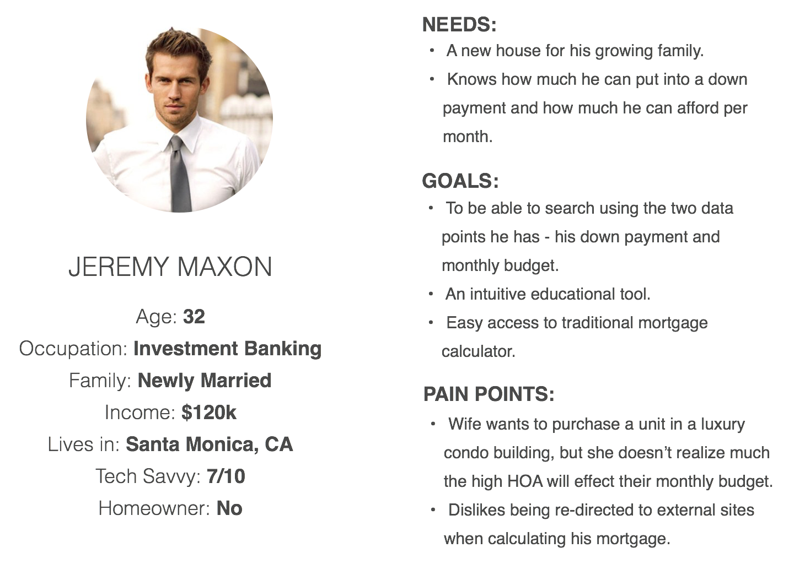
Re-Imagined User Flow
Now that I had a user in mind, I created a high-level flow depicting the path from opening the application to finding a home using the new search feature. With this flow in mind I was able to start the wireframe process
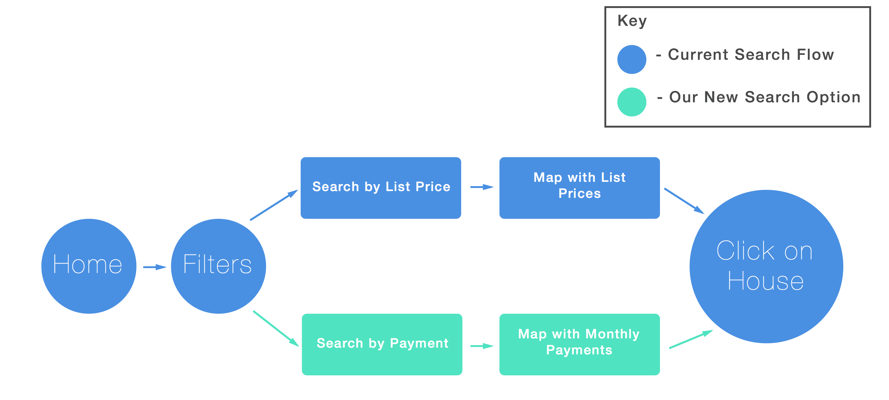